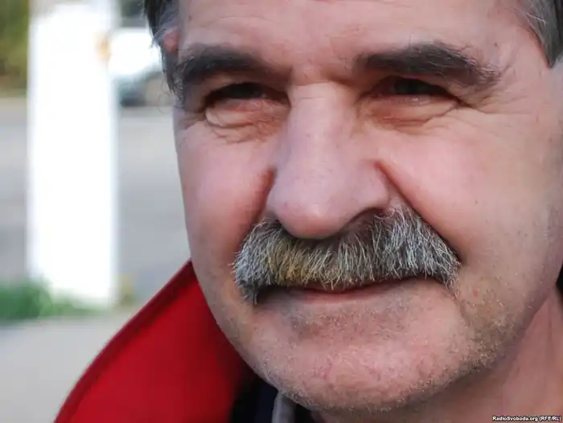
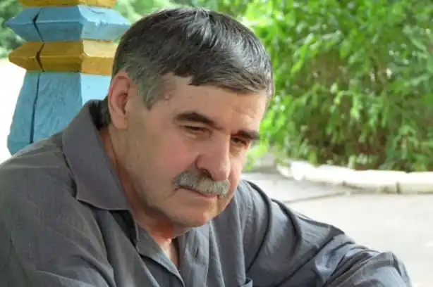

ГОЛОБОРОДЬКО ВАСИЛЬ ІВАНОВИЧ
1945 (7.04)
Любов до свого народу, батьківщини проявляється у поетів по-різному. Виражається вона не тільки у схилянні перед героїчним минулим та чеснотами України. Часто поети гострим словом таврували недоліки свого краю, недалекоглядність народних мас, бажаючи добра усім. Так, Леся Українка не побоялася назвати свій народ покірним рабом за те, що він "На себе самохіть кладе кайдани" (вірш "Слов'янин — раб"). А наш земляк М. Чернявський називав українців словами "хлоп", "сліпі раби сліпої сили" за те, що цей хлоп в революцію "все нищив і ганьбив. На смерть закон і глузд убив" ("Помста сліпців", 1918 р.). Здавалося б, що закладена в нашій літературі традиція будити народ, називати суспільні негативні явища своїми іменами, матиме своє продовження і в нових поколіннях письменників за радянської влади, бо ж суспільний поступ вимагає критичного самоочищення всіх. Та не так на цю позицію митців стали дивитись у двадцяті і пізніші роки. У часи побудови "найпрогресивнішого суспільства" ця традиція була штучно припинена. На думку тодішніх (та й пізніших керманичів СРСР) народу потрібна була тільки величальна пісня поетів про успіхи та перемоги рідної партії, ідей Леніна і Сталіна. Право на критичне слово мав виключно тоталітарний режим і письменники, які йому вірно служили. Той з поетів, хто насмілювався думати і писати про інше, а тим паче критикувати керівництво, виключався за це не тільки з літературного процесу, але часто й з самого життя. Одні, як Василь Стус, пішли за свої переконання на загибель, інші, як Василь Голобородько, у внутрішню еміграцію. Народився Василь Іванович у селі Адріянопіль на Луганщині у селянській родині. Закінчивши українську семирічку, пішов продовжувати середню освіту в російськомовну школу. Про свій початок дорослого життя поет так розповідав кореспонденту журналу "Україна" на початку 90-х років: "1964-го я вступив до Київського університету імені Т. Г.Шевченка й рік навчався на філологічному факультеті. Потім склалося так, що в театральному інституту Володимир Дени-сенко набрав режисерську групу й у ній не виявилося жодного, який би знав українську мову, був причетний до нашої культури. Отоді Сергій Параджанов1 і порадив йому запросити навчатися мене. Я згодився. Однак в університеті не розрахувався, до інституту не перевівся. Після співбесіди походив з місяць на навчання й побачив, що там немає науки, що то ремісниче училище, яке готує ремісників. Поверхово і швидко. Університет я покинув, бо не відбув трудової практики в колгоспі, а то було страшніше за академнеуспішність— відрахували одразу ж. Подав заяву за власним бажанням та й розрахувався, а з 1966 року поновився в Донецькому університеті — на другому курсі..." __________________ 1Відомий кінорежисер, постановник кінофільму "Тіні забутих предків" за, одноіменною повістю М. Коцюбинського (приміт. укладача). Та не втримався Василь і тут. Бо "надія української літератури", як назвав поста на V з'їзді письменників України Олесь Гончар (1966 р.), став незручним для периферійного університету: Голобородько відверто висловлювався проти русифікації, проти того, що на українському відділенні переважна частина лекцій читалася російською мовою. Крім того, Василь активно пропагував серед студентства заборонену працю І. Дзюби "Інтернаціоналізм чи русифікація?" ...Та й вірші його були якісь не такі... В цей час не без відома КДБ була "зарізана" і його перша збірка віршів, яку подав В. Голобородько в одне з київських видавництв. Таким чином, за всіма ідеологічними критеріями того часу молодий поет став небезпечним для правовірного керівництва Донецького університету у багатьох відношеннях. А дещо пізніше трапилось таке: у 1970 році в Парижі цей самий відкинутий на батьківщині рукопис був виданий книгою. Таке явище було нонсенсом у тогочасній радянській дійсності: раз друкують за кордоном — значить ворог... З того часу і почалася Василева внутрішня еміграція, яка затягнулася майже на двадцять років. Двадцять років замовчування й офіційного невизнання. Та ім'я поета випурхнуло за залізні радянські грати: у 1983 році в Югославії була видана антологія світової поезії, яка мала назву "Від Рабіндраната Тагора до Василя Голобородька". Збірник знайомив читачів Європи з предтечами поезії ХХ століття — По , Геббелем Уїтменом, Фетом, Бодлером, Норвідом, Малларме, Верлениом, Хопкінсом, Лотреамоном, Рембо, Лафаргом, також з творами поетів ХХ-го століття "від Рабіндраната Тагора до Василя Голобородька". Можна тільки уявити, яким стало життя нашого поета-земляка по цей бік залізної брами. Постійний нагляд "компетентних органів", натяки односельців на те, що продався за долари. А поет не одержував ні копійки за свої твори, бо його твори видавались у безгонорарних видавництвах... Важкі це були часи для В. Голобородька. Виключений з Донецького університету, повернувся у рідне село, працював на шахті, потім у радгоспі. В Україні перша збірка поета "Зелен день" видана 1988 року тиражем всього тисячу примірників. Але цього було досить. щоб вона стала літературним явищем. Іван Дзюба, теж наш земляк, відгукнувся в "Літературній Україні" на це видання, давши йому високу оцінку. Зокрема критик писав, відзначаючи найхарактерніше для творчої манери поета: "У збірці "Зелен день" переважають давні поезії, але є чимало й нових. Пригадується, колись, у 60-і, думалося: чи наївність і "дитинність" Василеві, природні для вісімнадцяти-двадцятирічного юнака, не стануть удаваними й солодкавими, коли прийде зрілий вік? І от нові вірші показали, що цього не сталося. Поет зберіг колишню свіжість і наївність (наївність як безпосередність переживання, як чистоту душі, а не як самодостатнє невідання добра і зла), зберіг "дитинність" (як глибину вразливості та легкість уяви), але поєднав їх із змужнілістю, — хоч вона в нього, як і раніше, не публіцистична, а явлена саме в неповторному поетичному переживанні суспільних явищ, сторінок національної історії". Згодом, у 1990 році, київське видавництво "Молодь" подарувало читачам ще одну збірку поета — "Ікар на метеликових крилах". Як і в попередніх книгах. В. Голобородько не звертається всує до імені своєї батьківщини і рідного народу, хоча вся увага поетичної снаги автора занурена в образний світ народних вірувань, народної філософії та моралі. Цьому в значній мірі слугує віршовий розмір верлібр, в якому часом вчувається ритм старовинної думи: Гей, козаче, чи ти через міру на радощах від перемоги оковитої впився, чи ти від жиру молодого, як собака, сказився, чи ти у лиху годину із розумовим ґанджем уродився — ти ж не татарин, а юрба оця — не татарський ясир, це ж — репатріанти — — знову русичі — — відбитий полон, повернений міждо мир християнський.,.Поет не ставить собі за мету спеціально звертатись до фольклорних засобів, і це спосіб його мислення, який іде від інтуїтивного народного світогляду, визначаючи таким чином поетичне кредо автора. Наче сама наша історія проходить рядками поезій. Це й образ славного Сагайдачного, "який поміж рідні, що вийшла проводжати, стоятиме, у далеку путь проводжатиме" ("Напучування") , це й згадка про Берестечко — вічну українську печаль (вірш "Кривий танець"). Та минуле не існує для Голобородька самодостатньо. Поет напружено шукає в ньому відповіді на пекучі проблеми сьогодення. Він питає: "Чому ми такі стали сьогодні?" Чи ж не ми самі перемикаємо телевізійний канал, коли почуємо українську пісню, бо в пій співається про інший світ, у якому не хочемо жити! Ці слова печуть серце і зараз, коли утвердилась суверенна Україна, але національна свідомість народу, особливо на сході, залишається вельми низькою. Хвилює поета недавня гірка і печальна історія голодомору ЗЗ-го року, страхітлива доля українського письменства ("Побачення з Косинкою", "По слідах", "Телесик" та ін.). Василь Голобородько—філолог і не скільки за освітою як за глибинним відчуттям суті рідного слова у його найрізноманітніших нўюансах. Яскравим і переконливим прикладом цьому може слугувати розділ його збірки віршів "Слова у вишиваних сорочках" (К., 1999) —"Українські птахи в українському краєвиді". Поетом пророблена титанічна робота над пошуками синонімічних рядів усного народного слова на позначення назв характерних для України птахів. Та головне тут перш за все в тому, що Голобородько переливає ці назви у форму вартісного поетичного слова, у свої верлібри. Ось, для прикладу синонімічний ряд на визначення назв широко побутуючого у нашій країні птаха—відомої усім горлиці: Горлице, горлице, ти живеш у лісі або у садку, але не на подвір'ї, ти — дикий голуб, ти голос свій подаєш, туркочеш і своїм турканням себе називаєш: ти — і туркавка, і туркавонька, і туркавочка, і туркалка, ти — і гуркавка, і туркочка, і тукавка, і тутавка, ти — і тутайка, і туторка, і туріючка, і тручка, ти — і туркало, і туркач, і туртош, і турок, ти — і торонда, і торомба, ти маєш туркотливе горлечко, ти туркочеш, ти воркочеш, ти — туркотлива горличко — прочищаєш горлечко, тому ти — і горлиця, і горлице, і горличка, і горленок, ти — і орлиця, і орличка, і орлик, ти так давно живеш поруч із моїм народом, із прачасів мій народ переніс до сьогоднішнього дня.. Та не тільки синонімічні ряди є характерними для назв птахів у віршах В.Голобородька. Це—тільки частина його фольклорних розшуків. До кожного вірша про того чи іншого українського птаха він добирає прислівўя, приказки, загадки, які ґрунтуються у свідомості народного генія на спостереженнях про них, прикметах , повірўях і навіть на замовляннях. Відтворення у поетичному слові багатства назв українських птахів має ще у Василя Голобородька і прагматичне значення. Сам поет про це говорив так: "Побачивши якось птаха, про якого не знаємо навіть назви, ми тільки одне зауважуємо, на рівні безпосереднього спостереження, притаманного не лише людям: це —птах, але знаючи усе багатство назв птаха, загадку про нього, прислівўя і приказки, повірўя і прикмети, заклички і замовляння, повўязані з птахом, ми привносимо все це птахові, олюднюємо його, а, бачачи птаха в краєвиді, тим самим олюднюємо і дикий, порожній без людської присутності краєвид". У своїх віршах Василь Голобородько не шукає прямої відповіді на пекучі проблеми буття, його поезія — це своєрідний погляд на людину "з середини, в матеріалі національної психіки й чуттєвості, ожилих та оновлених архетипах народної художності" (І.Дзюба). Світ поезій Василя Голобородька змушує нас звернутись до себе, до своєї історії, вимагає бути уважними до того, що відбувається навколо, що чекає нас завтра.